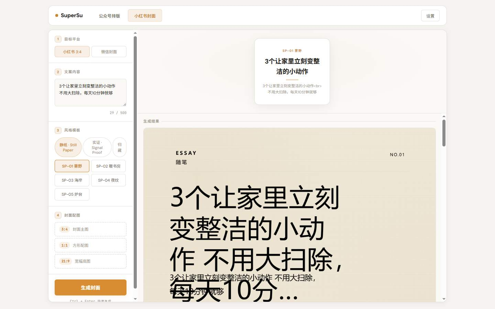

立场：假设上一份 UX 方案全是错的，逐条去代码里找反证。找得到的就改，找不到的才保留。
审计对象：docs/ux-audit/index.html（原方案）；证据：源码 + 走查数据 walkthrough.json。
审计总评：原方案的"问题发现"基本站得住（8/10 条有实锤），但"改法"有 3 处被推翻、4 处要修正。 最核心的错误：我把一个个人工具当成了大众产品来治——给"每天都是同一个人用"的工具开"新手引导"的药，方向就偏了。
审计后最重要的一句话：这个工具唯一的高频用户就是你。所有改法先问一句——"这让我明天用起来更快了吗？"答不上来的，砍掉。
原方案把"预览里露出 <br>"和"成品封面文字溢出"揉成一条、当成一个病治。去代码里一查，是两个完全不同的病，一个在前端，一个在封面引擎里。
index.html:1490 把文案换行拼成 join('<br>')，但 :1458/:1472 用 textContent 赋值——HTML 被当纯文本显示。这个 bug 只在"预览卡"上，成品封面 PNG 里根本没有 <br>（回看结果截图可证）。修法：改用 join('\n') + CSS 换行，或安全转义，一行的事。template-still-paper-card.html:37 标题字号写死 76px、正文写死 24px，文字一长必然溢出。且这是 blcaptain-style-skill/ vendored 子项目——按项目纪律不能直接手改生成物，要在源里改、重新生成、跑它自带的 .mjs 测试。原方案"前端自动缩字号"完全落错了层，工作量也从"小"变"中"。修正后：拆成两条独立工单。① 预览卡 <br>（小，前端一行）→ 提到最优先；② 成品溢出（中，引擎层自适应字号 + 溢出钳制，改源→重生成→跑引擎测试）。另外原方案"重叠"现象根因未定位（可能是布局槽位溢出而非仅字号），动手前必须先在引擎层复现，不许直接上补丁。
加载反馈该做，这点不变。但审计发现慢的大头根本没被治：搜底图走网络，单次超时上限 15–20 秒（image_search.py），再叠加封面引擎冷启动。最坏情况要等 35 秒以上——
原方案写"预计耗时：约 10 秒"是拍脑袋，会把"没有反馈"变成"反馈在撒谎"，比不写更伤信任。
core/image_search.py:110/124/150 三处网络请求 timeout 15–20s；走查实测底图来源为 local，说明本次联网搜图失败后回退本地图——用户等了半天网络、最后拿的还是本地图。修正后：① 反馈做成阶段化进度（"正在联网找底图… → 正在排版… → 完成"），不承诺具体秒数；② 治本：搜图结果做缓存（同一关键词不再重复联网），失败时明确告知"联网没找到，用了本地底图"（这也符合项目"失败必带原因、不静默"的铁律）；③ 动手前先分段计时（搜图占几秒、引擎占几秒），数据出来再决定要不要并行/复用引擎，不盲改。
原方案把"新手引导"列为 P0。审计反问：这个工具的"不懂技术的新用户"到底是谁？项目定位（AGENTS.md）写得明明白白——个人工具。唯一高频用户已经会用，给老用户常驻一条"①②③"，天天看、天天多余，反而更费事。这是我全篇最重的一条自我否定。
保下来的部分："示例文章塞在输入框里、要先删干净"这个痛点是真的，但解法不该是引导条，而是——
修正后：① 输入框只留一句灰字"粘贴你的文章"；示例改成右上角一个"看示例 / 清空"小按钮，想看才看；② 真正对老用户省事的是记住上一次选的主题（下次打开不用重新找）——这条原方案完全漏了，补进 P0。
"用户 90% 只复制"是我编的假设，没有任何数据。恰恰相反：这个工具做了推送历史、账号管理、草稿推送整条链路——对唯一的高频用户来说，"推送"很可能和"复制"一样高频。把推送降级，等于给主人最常用的功能使绊子。
修正后：不预设谁主谁次。① "复制"和"推送"同级醒目；② 未配置公众号时点"推送"给一条明确引导（"先到右上角『设置』绑定，约 1 分钟"）——这条无争议，保留；③ 进阶做法（P2）：按你自己的使用频率自动排列这两个按钮的顺序。
给 92 套主题逐套打"商务/文艺/科技"标签是一次性体力活，标签质量还决定成败——打歪了比不打更糟。审计结论：对单人用户，"人工分类"是贵且钝的方案。
修正后（按性价比排序）：① 悬停即试看——鼠标放到色卡上，预览区立刻换装（开源项目 md-wechat 的成熟做法），"选错重试"的成本直接归零，不需要任何标签；② 最近使用置顶 + 收藏——你常用的 3–5 套永远在最前面，比 92 个分类准得多；③ 搜索空结果给"清除搜索 / 看热门"兜底（便宜，保留）；④ 人工标签分类降为 P2，可不做。
结论保留。补充一个原方案漏掉的现成条件：项目已有缩略图基础设施（/api/social/thumbnails 路由 + public/social-thumb/ 目录），示例图不必新做机制，复用即可。补一条真 bug 佐证：预览卡里那个 <br>（裁定 1）就发生在这一块，先修它。
对照表保留。审计加一条原方案漏掉的实锤：
extractSocialTitle（index.html:1458）——根本没有 AI 参与。用户会误以为"不配 AI 就用不了"。改为："把要说的写在这里，第一行会自动当成标题。"——如实描述，还顺带消除了对 AI 的错误依赖。
证据坐实：index.html:1590 把"自动联网搜索"写死在模板串里，无论实际来源是什么都这么显示。修正：来源为 local 时如实写"联网没找到合适的图，已用本地底图"——与项目"失败必带原因、不静默"铁律对齐。
手机端没横向错位（合格），唯一硬伤是顶栏换行。但这是本地 PC 工具，手机场景本身边缘。降为 P2：只把顶栏文字改短（"公众号 / 小红书 / 设置"）即可，其余不动。
"3 位非技术用户 10 秒说出第一步"这类新手可用性指标对个人工具无意义，删。换成对"你"有意义的：
<br>（不变，这是硬的）| 级别 | 漏了什么 | 为什么重要 |
|---|---|---|
| P1 | 生成慢只给了"反馈"，没给"提速"：搜图无缓存迹象、封面引擎疑似每次冷启动、3 张图疑似串行渲染 | 高频用户每天都交这几秒的税；缓存 + 复用引擎实例才是治本 |
| P1 | 失败路径一次都没走查：断网、搜图超时、LLM 挂掉、空文案点生成、500 字满、纯 emoji——只测了 happy path | 个人工具不怕"不好看"，怕"坏了我不知道为什么"；报错态不清楚 = 半残品 |
| P1 | 改封面模板有纪律红线：blcaptain-style-skill 是 vendored 子项目（生成物 DO NOT EDIT） | 不守"改源→重生成→跑引擎自带测试"的流程，改一次坏一次，且 9 个风格一起遭殃 |
| P2 | output/ 已堆积 366 个文件（每次生成新建 task_id 目录，无清理策略） | 磁盘慢性垃圾；顺带"历史"入口和文件系统各记一套，找图两头懵 |
| 优先 | 做什么 | 对比原版的变化 | 工作量 |
|---|---|---|---|
| P0 | 修预览卡 <br>（前端一行） | 从"封面崩坏"里拆出，独立、最快见效 | 极小 |
| P0 | 生成阶段化进度（找底图→排版→完成），失败写明原因 | 去掉"约 10 秒"的假承诺 | 小 |
| P0 | 记住上次选的主题 + 示例改"看示例/清空" | 新增（原方案漏）；替代被推翻的"三步走引导" | 小 |
| P0 | 推送未配置 → 明确引导到设置；复制/推送同级醒目 | 不做"谁主谁次"的预设 | 小 |
| P0 | 封面成品溢出/重叠（引擎层：自适应字号 + 溢出钳制，改源→重生成→跑引擎测试） | 落点从"前端"纠正为"引擎"，先复现再改 | 中 |
| P1 | 搜图结果缓存 + 分段计时（数据出来再定并行/复用引擎） | 新增（治本提速） | 中 |
| P1 | 模板：悬停即试看 + 最近使用置顶 + 收藏；搜索空结果兜底 | 替代"人工打 92 套标签" | 中 |
| P1 | 文案修正（含假宣传"AI 自动提取标题"）+ 署名如实（local 时写明降级） | 加码：假宣传实锤 | 小 |
| P1 | 失败路径补测（断网/超时/LLM 挂/空文案/满 500 字/纯 emoji） | 新增（补走查盲区） | 小 |
| 降级 | 手机端顶栏改短词 | P1 → P2（PC 工具，场景边缘） | 极小 |
| 降级 | 92 套人工标签分类 | P0 → P2，可不做（悬停试看 + 置顶已覆盖） | — |
| 降级 | 三步走常驻引导 | P0 → 砍掉（个人工具，老用户噪音） | — |
| 降级 | "AI 智能排版"改名 / 模板缩略图 / output 清理 | 维持 P2 | 中 |

docs/ux-audit/index.html；证据数据：docs/ux-audit/walkthrough.json。两份报告冲突时，以本份（审计后）为准。